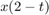
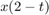
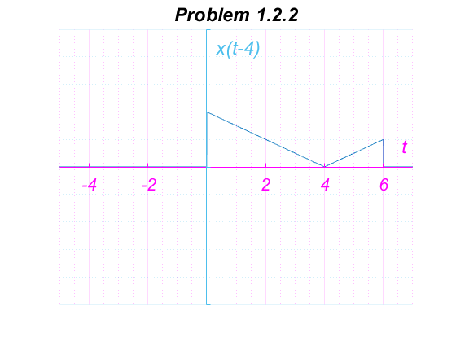

Practica 2: Señales Continuass
Contents
Punto 1
Funcion que evalua
%Esta es una funcion que evalua a F(w)=a/(a^2 + w^2) function F = fun1(a, w) F=a./(a^2 + w.^2); end
Punto 2
w=-2:0.001:2; f=fun1(1, w); Grafica(w, f, 'Grafica de F(w)', [-3 3], [-2 2], 'w') %
Punto 3
La transformada de Fourier de es La parte real es :  La parte imaginaria es :
La parte imaginaria es :
w=-10:0.001:10; Re_F=@(w) (sqrt(29)/29)*cos(atand(w/2)); Im_F=@(w) (sqrt(29)/29)*sin(atand(w/2)); Grafica3D(w, Re_F(w), Im_F(w), 'Grafica de la transformada de Fourier') %
Punto 4
% M1.1 inline functions f=@(t) exp(-t).*cos(2*pi*t) t=0; f(t) f(0) t=-2:2; f(t) Grafica(t, f(t), 'Execise M1.1 G1', [-3 3], [-6 8], 't'); t=-2:0.001:2; Grafica(t, f(t), 'Execise M1.1 G2', [-3 3], [-6 8], 't'); % M1.2 Relational Operators and Unit Step Function u = @(t) t>=0 t = -2:2; Grafica(t, u(t), 'Excercise M1.2 G1', [-3 3], [-2 2], 't') ylabel('u(t)'); t=-2:0.001:2; Grafica(t, u(t), 'Excercise M1.2 G2', [-3 3], [-2 2], 't') ylabel('u(t)'); p=@(t) (t>=0 & t<1); t=-1:0.01:2; Grafica(t, p(t), 'Excercise M1.2 G3', [-3 3], [-2 2], 't') ylabel('p(t) = u(t)-u(t-1)'); % M1.3 Visualizing Operations on the Independent Variable g=@(t) exp(-t).*cos(2*pi*t).*(t>=0) t=-2:0.01:2; Grafica(t, g(2*t+1), 'Excercise M1.3 G1', [-3 3], [-2 2], 't') ylabel('g(2t+1)'); Grafica(t, g(-t+1), 'Excercise M1.3 G2', [-3 3], [-2 2], 't') ylabel('g(-t+1)'); Grafica(t, g(2*t+1)+g(-t+1), 'Excercise M1.3 G3', [-3 3], [-2 2], 't') ylabel('h(t) = g(2t+1) + g(-t+1)'); % M1.4 Numerical Integration and Estimating Signal Energy x = @(t) exp(-t).*(t>=0 & t<1); t=0:0.01:1; E_x = sum(x(t).*x(t)*0.01) x_square=@(t) exp(-2*t).*(t>=0 & t<1); E_x = integral(x_square, 0, 1) g_squared = @(t) exp(-2*t).*(cos(2*pi*t).^2).*(t>=0); t = 0:0.001:100; E_g = sum(g_squared(t)*0.001) E_g = integral(g_squared, 0, 100)
f =
function_handle with value:
@(t)exp(-t).*cos(2*pi*t)
ans =
1
ans =
1
ans =
7.3891 2.7183 1.0000 0.3679 0.1353
u =
function_handle with value:
@(t)t>=0
g =
function_handle with value:
@(t)exp(-t).*cos(2*pi*t).*(t>=0)
E_x =
0.4367
E_x =
0.4323
E_g =
0.2567
E_g =
0.2562
Punto 5
For the signal illustrated, sketch a) b) c) d)  e) 
e) 
x=@(t) abs(t./2).*(heaviside(t+4)-heaviside(t-2)); t = -10:0.001:10; Grafica(t, x(t), 'Problem 1.2.2', [-5 3], [-5 5], 't') ylabel('x(t)'); Grafica(t, x(t-4), 'Problem 1.2.2', [-5 7], [-5 5], 't') ylabel('x(t-4)'); Grafica(t, x(t/1.5), 'Problem 1.2.2', [-10 5], [-5 5], 't') ylabel('x(t/1.5)'); Grafica(t, x(-t), 'Problem 1.2.2', [-4 6], [-5 5], 't') ylabel('x(-t)'); Grafica(t, x(2*t-4), 'Problem 1.2.2', [-5 6], [-5 5], 't') ylabel('x(2t-4)'); Grafica(t, x(2-t), 'Problem 1.2.2', [-2 8], [-5 5], 't') ylabel('x(2-t)');

Punto 6
Funcion para calcular energia:
function [E] = Energia(f, t) E = integral(f, min(t), max(t)); end
% % Find the energies of the pair of signals $x(t)$ and $y(t)$ % % a) x=@(t) square(t).*(t>=0 & t<=2); y=@(t) square(-t+1).*(t>=0 & t<=2); t=-2:0.001:4; Grafica(t, x(t), 'Problem 1.1.3', [-1 3], [-2 2], 't') ylabel('x(t)'); Grafica(t, y(t), 'Problem 1.1.3', [-1 3], [-2 2], 't') ylabel('y(t)'); E_x1=Energia(x, t) E_y1=Energia(y, t) % % b) x=@(t) sin(t).*(t>=0 & t<=2*pi); y=@(t) heaviside(t).*(t>=0 & t<=2*pi); t=-2:0.001:4*pi; Grafica(t, x(t), 'Problem 1.1.3', [-1 3*pi], [-2 2], 't') ylabel('x(t)'); Grafica(t, y(t), 'Problem 1.1.3', [-1 3*pi], [-2 2], 't') ylabel('y(t)'); E_x2=Energia(x, t) E_y2=Energia(y, t) % % c) x=@(t) sin(t).*(t>=0 & t<=pi); y=@(t) heaviside(t).*(t>=0 & t<=pi); t=-2:0.001:4*pi; Grafica(t, x(t), 'Problem 1.1.3', [-1 2*pi], [-2 2], 't') ylabel('x(t)'); Grafica(t, y(t), 'Problem 1.1.3', [-1 2*pi], [-2 2], 't') ylabel('y(t)'); E_x3=Energia(x, t) E_y3=Energia(y, t)
E_x1 =
2.0000
E_y1 =
2.2964e-16
E_x2 =
-3.0005e-12
E_y2 =
6.2832
E_x3 =
2.0000
E_y3 =
3.1416

Punto 7
Funcion para calcular potencia:
function [P] = Potencia(f, T) F=@(t) f(t).^2; P=integral(F, -T/2, T/2)/(T); end
% T=4; t=-T/2:0.001:T/2; f=@(t) t.^3; Grafica(t, f(t), 'Problem 1.1.4', [-6 6], [-10 10], 't') P_0 = Potencia(f, T) a=@(t) -f(t); P_a = Potencia(a, T) b=@(t) 2*f(t); P_b = Potencia(b, T)
P_0 =
9.1429
P_a =
9.1429
P_b =
36.5714